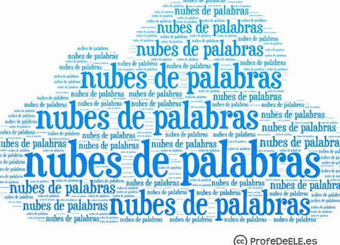

Mentimeter
¿Qué es Mentimeter?
Mentimeter es una herramienta digital en línea que permite crear presentaciones interactivas, donde las personas pueden participar en
tiempo real desde sus celulares, tabletas o computadoras. Se usa para hacer encuestas, preguntas, votaciones, nubes de palabras, cuestionarios
y más, todo con participación del público en vivo.
¿Para qué sirve Mentimeter?
Mentimeter sirve para hacer más dinámicas, participativas y divertidas las presentaciones, clases, talleres o conferencias.
Algunas funciones principales:
Crear nubes de palabras en vivo.
Hacer encuestas o votaciones anónimas.
Aplicar quizzes o trivias con puntuación.
Recoger opiniones en tiempo real.
Mostrar resultados de forma visual (gráficas, barras, etc.)
¿Cómo se puede utilizar Mentimeter?
Pasos para usar Mentimeter:
Registrarse en www.mentimeter.com (gratuito).
Crear una presentación nueva.
Elegir el tipo de pregunta (nube de palabras, opción múltiple, escala, etc.)
Escribir tu pregunta y configurar el diseño.
Al presentar, se genera un código o link.
El público entra a www.menti.com e ingresa el código para participar desde su celular.
Las respuestas se muestran en tiempo real en la pantalla.
¿Quién creó Mentimeter?
Mentimeter fue creado en Suecia en 2014 por Johnny Warström y Niklas Ingvar, con la idea de mejorar la comunicación y participación
en reuniones y presentaciones.
¿Cómo ha ayudado Mentimeter a la comunidad digital?
Mentimeter ha sido una herramienta muy útil en:
Educación: Profesores la usan para motivar la participación estudiantil.
Empresas: Se usa en reuniones para conocer opiniones o evaluar ideas.
Eventos virtuales: Aumenta la interacción en talleres, webinars y conferencias.
Toma de decisiones: Ayuda a recoger rápidamente la opinión de un grupo.
Con su formato anónimo y visual, permite que incluso los más tímidos participen activamente.
¿Diferencias entre Mentimeter, Canva y Genially?
Canva es para diseñar gráficos estáticos o con poco movimiento (como posters o presentaciones).
Mentimeter se enfoca en la participación en tiempo real del público (interactivo en vivo).
Genially permite crear presentaciones o contenidos interactivos y animados, como juegos o mapas con enlaces.
¿Cómo puedo hacer una nube de palabras en Mentimeter?
Ingresa a tu cuenta en www.mentimeter.com.
Crea una nueva presentación.
Selecciona el tipo de diapositiva "Word Cloud" (nube de palabras).
Escribe la pregunta, por ejemplo: “¿Qué palabras te representan?”.
Al presentar, te dará un código para compartir con los participantes.
Las personas escriben sus palabras y automáticamente se forma la nube en pantalla.
Las palabras más repetidas aparecen más grandes.
La nube se actualiza en tiempo real con cada respuesta.
